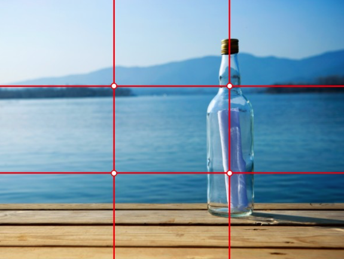
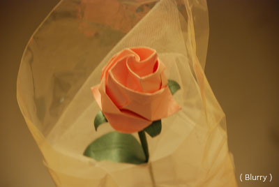

Chapter 2
Out in the Field
Photo opportunities abound any where, any time. So go ahead and take lots of pictures. Just remember a few guidelines:
Tip 1 : Enable Gridlines
(4) Gridlines
Frame the subject along the 1/3 line. As much as possible, try not to put the main subject in the center (don't cut the picture in half). Putting the subject in any of the points makes the photo much more pleasing ot the eye.
Tip 2 : Sharper is Better
Kawasaki Rose - Erik Lorenzana
Blurry photos are unatractive and sometimes next to useless, use a tripod (or lean on something) to minimize camera shake.
Note: Camera manufacturers offer lenses that have 'vibration reduction' (or equivalent). While much more expensive, used properly this allows you to take sharper photos without the aid of a tripod.
Tip 3 : Lighting
Early morning at the National Mall - Erik Lorenzana
Photography is all about lighting - here are a couple of things you need to consider:
- Golden Hour - refers to the hour after sunrise and/or hour before the sunset. Light during this hour is softer and redder which makes for a more pleasing picture.
- Direct light - try not to take photos with the light directly behind you - this results in a simple, boring picture (not to mention your shadow will likely be in the picture!). Instead, try taking the picture at the side or a different angle.